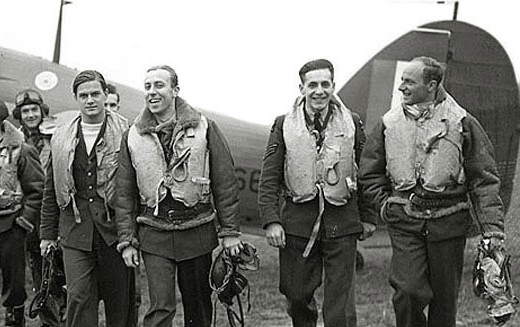
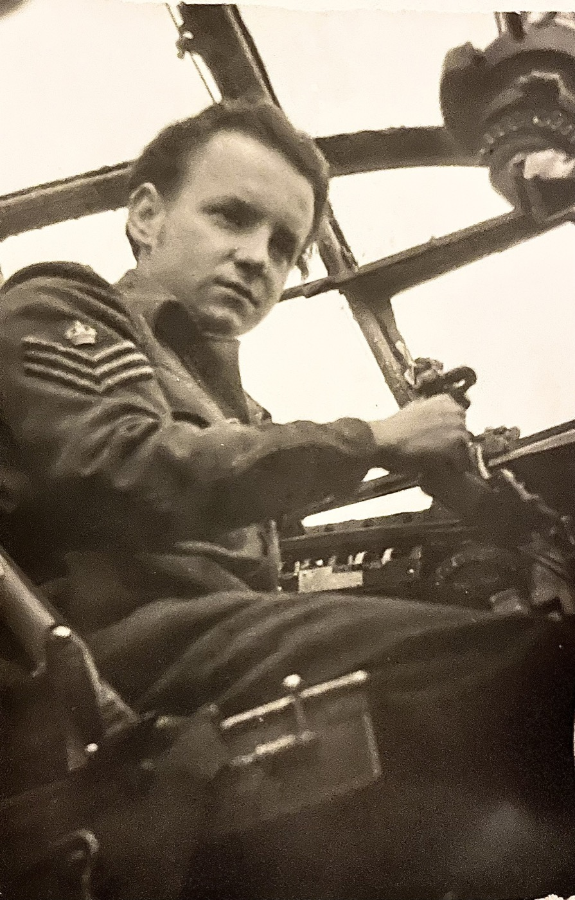
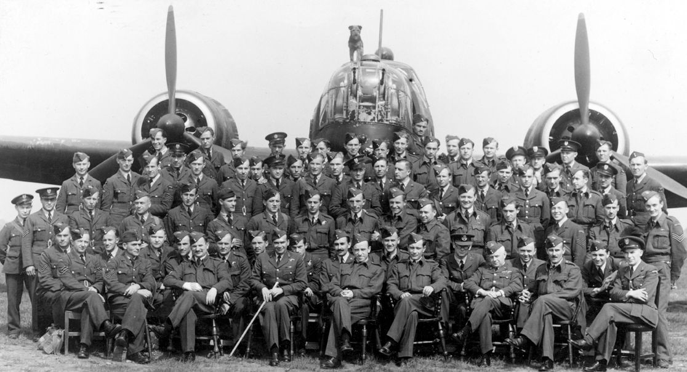
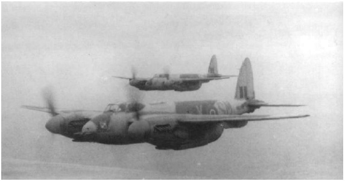
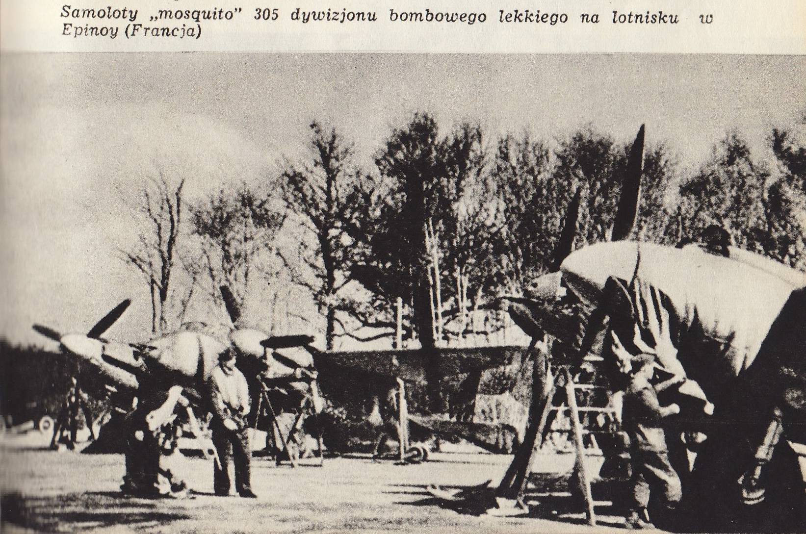
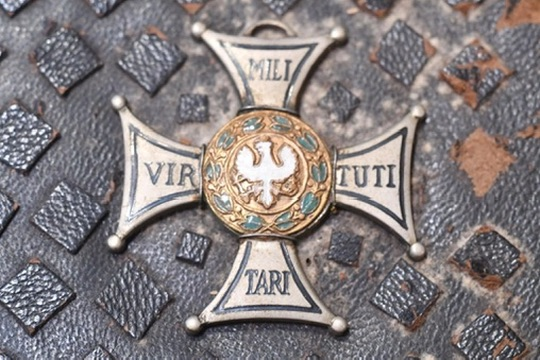

On the afternoon of 22 February 1945, a twenty-three-year-old Polish sergeant flew a shot-up Mosquito back across the front line on one engine. He had spent part of that day bombing a German freight train in a railway siding, then turning back through the anti-aircraft fire again and again to shoot it up. For that flight he was given the Silver Cross of the Virtuti Militari, Poland's highest decoration for valour.
Four years earlier he had been a rifleman in the Libyan desert. Half a century later he was a furrier in Brooklyn. This is what survives of the years in between.
- Service number
- 704205, RAF / Polish Air Force
- Trade
- Pilot
- Unit
- No. 305 Polish Bomber Squadron “Ziemia Wielkopolska i Lidzka” im. Marszałka Józefa Piłsudskiego
- Aircraft
- de Havilland Mosquito FB Mk VI
- Navigator
- Tomasz F. Wilczewski
- Rank
- Warrant Officer (RAF) · sierżant pilot (Polish)
- Decorations
- Virtuti Militari, Silver Cross no. 11054 · Krzyż Walecznych · Medal Lotniczy, twice
- Buried
- Brunswick Rural Cemetery, Wallkill, New York
Czernowitz, 1921
He was born on 25 March 1921 in Czerniowce, to Adolf Haas and Franciszka Czownicka Haas. The city has had about as many names as it has had rulers — Czernowitz under the Austrians, Cernăuți under the Romanians, Chernivtsi under the Ukrainians today. It had been Austrian until three years before his birth. At the time he was born it was Romanian. It was one of the great mixed cities of central Europe, with Polish, Romanian, German, Yiddish and Ukrainian spoken in the same streets. His mother's maiden name, Czownicka, is Polish.
That accident of geography explains a puzzle in the family story, which has him as Romanian in some tellings and Polish in others. Both are right. He was born a Romanian subject into a Polish family, and he went to war as a Pole.
In June 1940 the Soviet Union issued an ultimatum to Romania and took northern Bukovina, Czernowitz included. Whatever route he took out has not been documented. But within a year he was in the Middle East, in uniform, a very long way from home.
The desert
In April 1940 the Polish government in exile formed the Independent Carpathian Rifle Brigade — the Samodzielna Brygada Strzelców Karpackich — out of men who had escaped Poland after the invasion. It assembled in French-mandated Syria, and when France fell it marched out to British-held Palestine rather than surrender alongside the French. In August 1941 it was shipped into North Africa.
Haas was one of them. A brigade roster lists a Zygmunt Haas, born 1921, serving as a starszy strzelec — senior rifleman — in its 3rd Battalion. A Polish Air Force history goes further and names him among the Carpathian soldiers of the defence of Tobruk in 1941, identifying him as a man who would later fly with 305 Squadron.
Tobruk was a Libyan port the Allies held for eight months against Rommel, cut off by land and supplied by sea. The Poles took over a section of its perimeter in late August 1941 and held it until December — living in dugouts and slit trenches hacked into rock, shelled by day, out along the wire on patrol at night.
That was Haas's first war: on foot, with a rifle, in the sand.
A number in a sequence

No account survives of how a rifleman in Libya became a pilot in England. But his service number gives away more than a number ought to.
Polish airmen arriving in Britain were issued numbers in blocks, in the order they were processed. Haas was 704205. The man immediately ahead of him, 704204, was Jerzy Główczewski — later well known as the last surviving Polish-born RAF fighter pilot, and a man whose route is documented in detail.
Główczewski fled to Romania in September 1939, waited out a year in Bucharest, made his way to Mandatory Palestine, joined the Polish army there, served with the Carpathian Rifle Brigade in Egypt and Libya, and in June 1942 volunteered for the Polish Air Force in Britain. He then went through the training pipeline at Hucknall, Brighton, Newton, Morpeth and Rednal.
Consecutive numbers were handed out together. The two men almost certainly came out of the Middle East in the same 1942 draft of Carpathian veterans, and were very likely standing near each other in the same queue when those numbers were written down.
It also explains the one otherwise unexplained date on Haas's record: 4 September 1942. It is his entry into the Polish Air Force in Britain. The day a rifleman became an airman.
What followed was two years of training, and none of it has yet been traced — no schools, no dates, no instructors' remarks. Główczewski's list of stations is the likely shape of it. Haas surfaces again in August 1944, arriving at No. 305 Squadron from No. 18 Operational Training Unit as a sergeant pilot, twenty-three years old, with a navigator assigned to him named Tomasz Wilczewski. They flew together for the rest of the war.

The squadron he joined

No. 305 Polish Bomber Squadron began forming at RAF Bramcote in August 1940, though it took 1 September 1940 — the first anniversary of the invasion of Poland — as its official birthday. It carried the honorary name “Ziemia Wielkopolska i Lidzka”, the Land of Greater Poland and the Lida region, to which the squadron's own personnel voted to add the name of Marshal Józef Piłsudski. It took Wellingtons in April 1941 and spent the next two years at RAF Ingham flying night bombing with Bomber Command: the long, cold, heavily defended trips into Germany that killed so many crews.
In August 1943 it moved to Swanton Morley, left Bomber Command for the Second Tactical Air Force, and changed its work completely. Out went the Wellingtons, briefly in came American Mitchells, and then the squadron re-equipped with the aircraft it would finish the war on.
The Mosquito

What he flew shapes everything that follows, so it is worth being precise about it. A 305 Squadron crew was not seven men in a heavy bomber at twenty thousand feet. It was two men in a de Havilland Mosquito FB Mk VI: a twin-engined fighter-bomber built almost entirely of plywood, fast enough to outrun most German fighters, with four cannon and four machine guns in the nose and bombs under the wings and in the belly.
The squadron's work was night intruding and armed reconnaissance. Cross the lines after dark, take an assigned sector deep inside occupied Europe, and go looking — for trains, stations, road convoys, bridges, barges. Bomb what you find, then come round again and rake it with gunfire. Sometimes they dropped flares to light a target up, which also told every German gunner in the area exactly where they were.
Low, unescorted, alone in the dark. The danger was almost never fighters. It was flak.
The night they jumped
On 19 November 1944 the squadron packed up and moved to the Continent — to Épinoy, an airfield near Cambrai in northern France. The move caught Wilczewski away on leave, so Haas flew across alone.
When his navigator finally hitched a ride out to the new base, the two of them were put straight back onto the operations board: Wilczewski still in the dress uniform he had travelled in, and Haas, by the squadron's own telling, in a tracksuit.
On the night of 25/26 November 1944, fifteen Mosquitos of 305 Squadron went out to patrol railway lines. Haas and Wilczewski drew the sector around Enschede, on the Dutch–German border, flying HP913, coded SM-W. The aircraft's own record notes it was hit by flak over Germany that night.
Coming home was the problem. Wilczewski knew his courses, but he had never seen the new airfield and had no feel for the ground around it. Circling in the dark to work it out was a good way to get killed — and then they picked up a warning that a German night fighter's radar had found them. So Haas turned south and kept flying on a heading towards Allied territory, not entirely certain he was even over land.
When the time came to leave the aircraft, the escape hatch jammed. It took several kicks to open. Then both men went out into the night over Champagne, which had been in Allied hands for months.
HP913 was written off, and the squadron listed the crew as lost. American military police were reportedly baffled when local people delivered two Polish airmen to them, one in full dress uniform and the other in a tracksuit.
At the debrief the crew put the whole episode down to battle damage. The British supervising officers were not entirely convinced, and sent Wilczewski off to go and find his parachute.
They were back with the squadron the next day.
Warstade
22 February 1945. The Allies launched Operation Clarion, a single enormous blow against the German transport system. Instead of concentrating on a handful of strategic targets, thousands of aircraft went out at once against the small stuff that keeps an army moving: stations, track, locomotives, bridges, road traffic, barges, telephone lines.
The RAF sent three Mosquito wings — 143 aircraft — and sent them in daylight, to do work they normally did under cover of darkness. Fast as the Mosquito was, at low level in daylight it was inside the reach of every gun on the ground. Twenty-one of them did not come back.
No. 305 Squadron put up nineteen aircraft, given a sector near the Danish–German frontier and orders permitting them to attack more or less anything useful to Germany: roads, railways, bridges, junctions, shipping, radio masts, gas tanks, water towers, barracks, factories, vehicles. Crew number six was Sgt pilot Zygmunt Haas and navigator Tomasz Wilczewski, in NT234, coded SM-E.
In the area of Hamburg, Wesermünde and Meldorf they found a long German freight train standing at Warstade station.
Haas put two bombs squarely onto it. Then he came round with the nose guns and strafed the length of the train, setting off explosions and fires. He did not leave after one pass. He turned and came back, and turned and came back again, several times over, while the anti-aircraft fire thickened around him with every run.
Eventually the flak found one of his engines and stopped it.
He was a long way inside Germany in a twin-engined aircraft that now had one engine. He nursed it west, across the front line, and brought it home to Épinoy. Both men walked away. Of the nineteen 305 Squadron crews sent out that day, three came home on a single engine: Squadron Leader P. Hanbury, Major Ryszard Referowski, and Sergeant Haas. Referowski was given the Distinguished Flying Cross for that day's work, and Hanbury a bar to his.

That day the squadron collectively dropped thirty-three 500-lb bombs and fired 7,230 rounds of cannon and 5,400 rounds of machine-gun ammunition — a fair measure of what this kind of flying actually consisted of.
For the Warstade sortie, Zygmunt Haas was awarded the Silver Cross of the Virtuti Militari — award number 11054.

The Virtuti Militari is the oldest military decoration still awarded anywhere in the world, instituted in 1792, and Poland's highest for valour in the field. The squadron history ties his award directly to the Clarion mission, and his service number appears on the Polish Air Force roll of Silver Cross recipients.
The last nights
The winter and spring that followed were the busiest of the squadron's war. December brought 168 sorties across eleven operations, flown against the German offensive in the Ardennes; over Christmas some crews flew twice inside eight hours. January brought 147 sorties. A number of crews finished their fifty-operation tours that month and left. Haas did not.
By March the squadron was flying 212 sorties in nineteen nights, and had started bombing blind. The system was called M.R.C.P. — Mobile Radar Control Post. A radar unit sitting some twenty miles from the target tracked the Mosquito and talked the crew onto it by radio, correcting course and height, telling them when to open the bomb doors and when to release. The aircraft could jink and weave for most of the run, but had to fly straight and level through the short measuring segment at the end. It meant they could hit a target through cloud and darkness without ever seeing it.
In April they were ranging further than ever: 263 sorties in twenty-three operations, patrolling around Magdeburg and Bremen and reaching as far as Berlin.
On the night of 25/26 April 1945, twelve Mosquitos swept the Westerland–Flensburg area on the Danish frontier, the last aircraft landing at a quarter past four in the morning. It was 305 Squadron's final combat operation of the Second World War. One of the five Polish crews on the order of battle is recorded as “Sgt pilot Zbigniew Haas — navigator T. Wilczewski.”
There was no Zbigniew Haas in the Polish Air Force in Britain. Wilczewski's pilot was Zygmunt. It is almost certainly a slip of the pen — and if so, Sigmund Haas was flying operations into Germany a fortnight before the war ended, and was part of his squadron's last attack of it.
Decorations
His record lists three awards:
- Virtuti Militari, Silver Cross (VM V kl.), award number 11054 — Poland's premier order for valour, given for the Warstade sortie.
- Cross of Valour (Krzyż Walecznych) — for courage in the face of the enemy.
- Air Medal (Medal Lotniczy), twice.
He ended the war as a Warrant Officer in RAF terms and a sierżant pilot in Polish ones. In the accounts of individual operations he appears as Sgt or F/Sgt, because that is what he held on the day.
Brooklyn
He did not go home. The Poland that emerged from the war was not the country these men had left, and it was not a safe place for those who had fought under British command. Tens of thousands of Polish airmen stayed in the West rather than return.
Haas went to the United States, where Zygmunt became Segismundo — the Spanish form of the name, which is its own small unsolved puzzle and may point to a stop somewhere Spanish-speaking before he reached New York.
He settled in Brooklyn and worked as a furrier at Arm and Krauss in New York City. Later he moved up to Napanoch, in Ulster County. He married Helga Poehler and outlived her. They had two children, Rene and Halina, and four grandchildren — Jason, Christopher, Suzane and Alyson.
He died on 22 April 2002, aged eighty-one, and is buried at Brunswick Rural Cemetery on Hoagerburgh Road in Wallkill, New York. Niebieska Eskadra, the Polish project that catalogues the graves of Polish airmen around the world, has his plot recorded but no photograph of the headstone.
Notes on the record
Three names
He is in the records three times over under three versions of one name, which is why he was difficult to trace. Wartime Polish and RAF documents call him Zygmunt Haas. His family called him Sigmund. His American obituary calls him Segismundo Haas.
They are the same man. Krzystek's List gives Zygmunt Haas a birth date of 25 March 1921, service number 704205, the trade of pilot, 305 Squadron, and a death date of 22 April 2002 in the United States. The obituary for Segismundo Haas gives the identical birth and death dates, names Adolf and Franciszka Czownicka Haas as his parents, and says independently that he flew as an RAF pilot in the war. Niebieska Eskadra links the two explicitly and cites that obituary as its source.
What is firm and what is not
Firm. His identity, dates, service number, unit, rank, trade and decorations. His arrival at 305 Squadron in August 1944 from 18 OTU and the crewing with Wilczewski. The loss of HP913 on 25/26 November 1944. The Clarion sortie of 22 February 1945 in NT234, the single-engine return, and the Virtuti Militari that followed. His service with the Carpathian Brigade. HR346 / SM-K as the Haas–Wilczewski aircraft.
Inferred, but strongly. That he came to Britain in the 1942 draft of Carpathian veterans, and that 4 September 1942 is his enlistment date, both rest on his service number sitting immediately after Jerzy Główczewski's and on the way those numbers were issued. The reasoning is sound and the two men's paths match closely, but no document has yet been seen that states it directly. The same applies to the April 1945 “Zbigniew Haas” identification. And to the photograph of HR346 in flight: the squadron history captions it as carrying the Wilczewski–Haas crew, which would make it the only known picture of Haas actually flying, but nothing in the image itself can confirm who was inside, and the claim rests on that caption alone.
Less firm. Whether he was personally at Tobruk. The Polish Air Force list that names him there flags another future pilot as not having fought at Tobruk and carries no such note against Haas, which points to his having been present without proving it. The detailed account of the train attack at Warstade comes from a 1984 Polish article; the original Virtuti Militari citation has not been found, so it cannot be said that those are the words the award was justified on.
Squadron folklore. The tracksuit, the jammed hatch, the bewildered American MPs and the sceptical debriefing officers come from a retelling on a Polish aviation forum, not from a document. It names both men and is specific enough to be checked against the Operations Record Book, and the flak damage to HP913 is separately recorded — but the colour should be read as the squadron's story about itself, which is a different thing from a report.
Not supported. His obituary says he was “knighted by King George.” No British honour appears in any of his records, which document the Virtuti Militari, the Cross of Valour and two Air Medals and nothing else; as a Polish national he would not ordinarily have been knighted at all. The likely explanation is a translation one generation deep: a holder of the Virtuti Militari is formally styled Kawaler of the Order — Knight of the Order. A man decorated with the Virtuti Militari is, in Polish, quite literally a knight. Until a British record turns up the claim should not be repeated as fact, and it takes nothing away from the decoration he actually held.
What is still out there
Four routes remain, roughly in order of promise.
- The Polish Institute and Sikorski Museum, London. Holds the Polish Air Force personnel files — his teczka personalna — and the Virtuti Militari citations. Not online, but they respond to family enquiries. This is where the actual wording of his award lives, and it should cover the missing training years.
- The National Archives, Kew — AIR 27/1672. No. 305 Squadron's Operations Record Book. Inside it is RAF Form 541, the day-by-day “Detail of Work Carried Out,” logging every sortie whether or not anything remarkable happened: aircraft, crew, take-off and landing times, target, bombs, ammunition. The published squadron history names Haas only on his exceptional nights; Form 541 would name him on all of them. TNA's own site cannot be searched by crew name, but The Genealogist has name-indexed some AIR 27 books, which is faster than a trip to Kew. AIR 50 holds combat reports.
- RAF Disclosures, UK Ministry of Defence. Next of kin can request a serviceman's record directly.
- Krzystek's List and Polish Squadrons Remembered. Both collect material from airmen's families and may hold more on 704205 than they have published — the portrait at the top of this page came from them. Worth asking, and worth sending them anything the family holds.
Two smaller threads: Tomasz Wilczewski's own record, which would corroborate every sortie the two of them flew together; and US arrival records, which might explain where “Segismundo” came from.
Service no. 704205, RAF / Polish Air Force
Born 25 March 1921, Czerniowce
Rank W/O (RAF) · sierżant pilot (Polish)
Unit No. 305 Polish Bomber Squadron
Navigator Tomasz F. Wilczewski
Aircraft Mosquito FB.VI — HP913/SM-W, HR346/SM-K, NT234/SM-E
Decoration Virtuti Militari, Silver Cross no. 11054